Step By Step: Setup a CI Build
Create a Build Definition
- Navigate to VSTS and select your project
https://globaldevopsbootcamp.visualstudio.com
- Navigate to the "Build and Release" hub
- Create a "New" definition
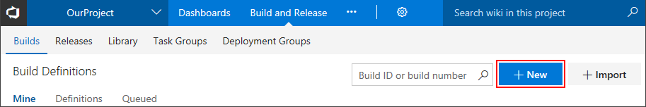
- Configure the sources, select your correct team project, repository and branch. Then click "Continue".
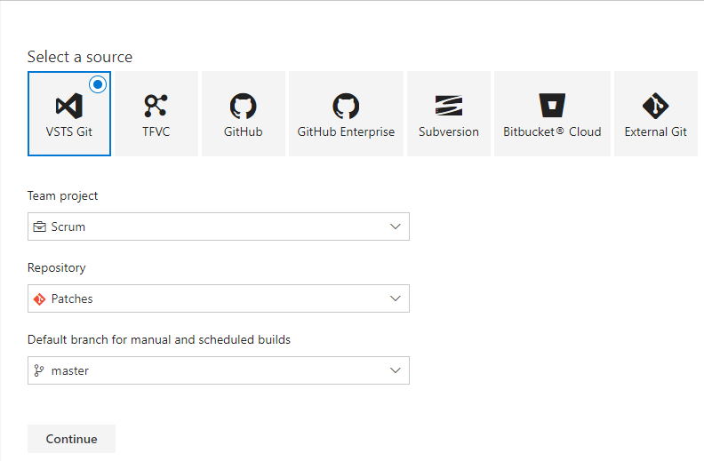
- Select a template, use "ASP.NET", click "Apply"
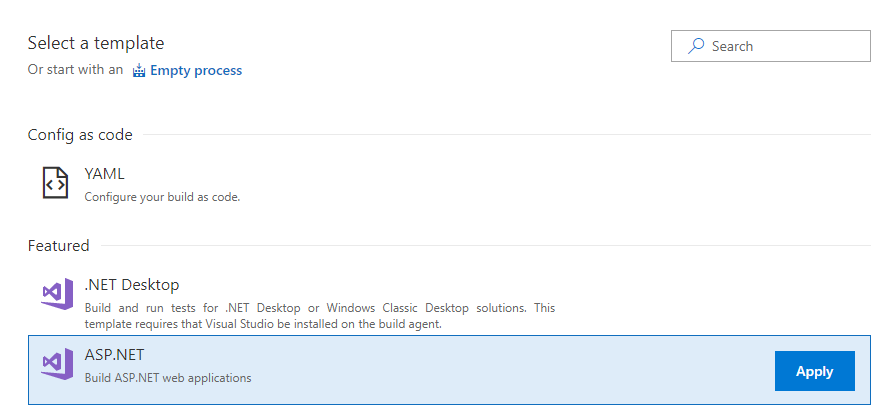
- Specify / change your build name and select the private build agent that you have installed as agent queue
- If your repository contains multiple solutions, select the specific solution
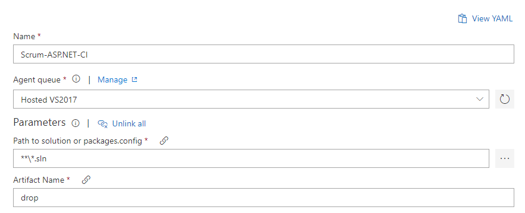
- Select the Visual Studio Build step, notice the MSBuild Arguments, this will provide a published
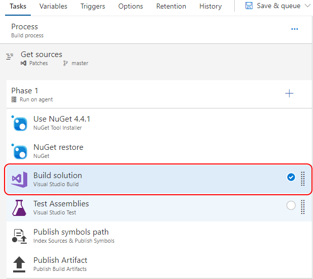
- Select the "Test Assemblies" step, review the settings. Change the value for testassemblies from
**\$(BuildConfiguration)\*test*.dll to **\$(BuildConfiguration)\*nunit.unittest*.dll. This will only run the NUnit unit tests after the build.
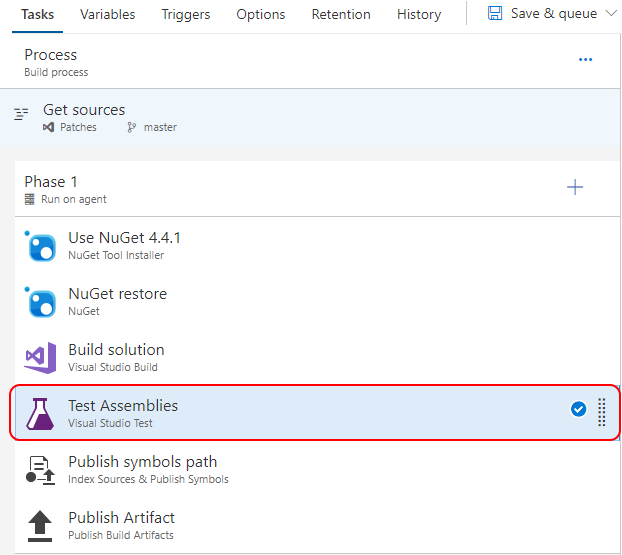
Enable Continuous Integration for your build ##
- While editing your build definition, navigate to the "Triggers" tab
- Check the "Enable continuous integration" option
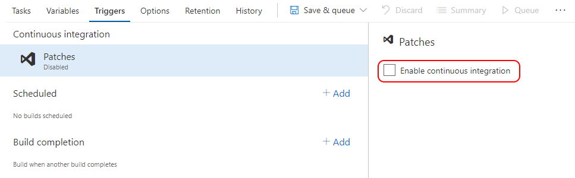
Run the build
- Press "Save & queue" to save and trigger the new build
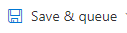
- Notice the feedback for the build being queued. Select the link to navigate to the build
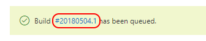
- VSTS Provides direct feedback from the build agent
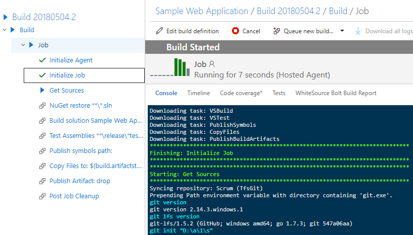
- After the build succeeds, refresh the browser
- Notice the new "Artifacts" tab, and click it.
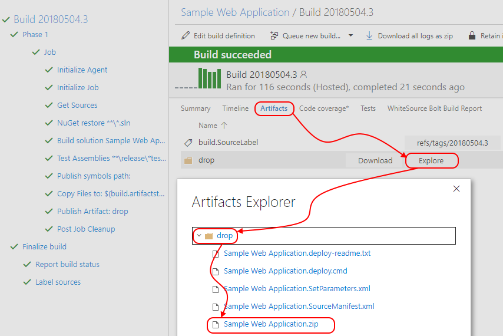
- Select the "Explore" button behind the created artifact.
- Expand the "Drop" folder
- Check & Verify the desired output is part of the artifact. In this case a ".zip" file containing the application.
Check that CI is triggered when a change to the code is pushed
- Open the MVC Music Store solution in Visual Studio
- Make a change to the web.config by adding a newline or a space in the file
- Right click the web.config and click on Commit
- Enter the required commit message and select Commit all and Push in the dropdown. This will push your change to the VSTS repo and trigger a new CI build.
- Open VSTS in the browser
- Click on the Build and Release tab
- Click on Builds. You should see the build that you just triggered